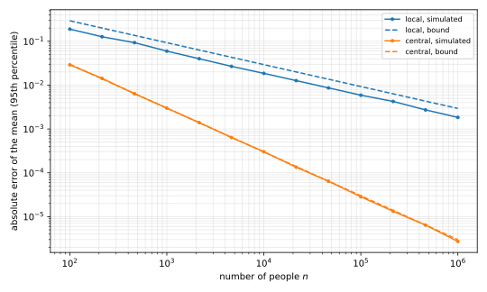

17 Local differential privacy
Almost every mechanism so far ran on a trusted curator who saw the raw data. This chapter drops that trust, so that each person randomizes their own record before it leaves their device. We define this local model and show that, with \(n\) people, it costs a factor of about \(\sqrt n\) in accuracy on the simplest task. No noninteractive protocol can escape that cost.
The rest of the chapter studies three large deployments of the local model, each of which solves a problem the textbook protocol ignores. Google’s protects people who answer the same question every day, Apple’s finds values that no one knew to ask about, and Microsoft’s sends numbers in a single bit and copes with values that drift.
17.1 The local model
In the central model of the first chapter on the definition, people send their data to a curator, and the trust barrier sits at the output of the curator. In the local model the barrier moves to each person. An adversary may see anything that leaves the device of a person, and the curator is now just an analyst who receives messages.
Definition 17.1 (Local randomizer) Let \(\varepsilon \ge 0\). A randomized algorithm \(R\colon \mathcal X \to \mathcal Y\) is an \(\varepsilon\)-local randomizer if for all inputs \(x, x' \in \mathcal X\) and all events \(S \subseteq \mathcal Y\),
\[ \Pr[R(x) \in S] \le e^{\varepsilon}\,\Pr[R(x') \in S]. \tag{17.1}\]
This is the definition of differential privacy (DP) applied to a dataset with one record. In the simplest protocol, everyone speaks once and at the same time.
Definition 17.2 (Noninteractive local protocol) A noninteractive \(\varepsilon\)-local protocol gives each person \(i\) an \(\varepsilon\)-local randomizer \(R_i\). Person \(i\) sends \(Y_i = R_i(X_i)\), using randomness independent of everyone else’s, and the analyst outputs a function of the messages \((Y_1, \dots, Y_n)\).
Local privacy implies central privacy, because the view of the analyst is a vector of messages and only one of them depends on any one record.
Proposition 17.1 The messages \((Y_1,\dots,Y_n)\) of a noninteractive \(\varepsilon\)-local protocol, viewed as the output of a mechanism on \(D\), are \(\varepsilon\)-DP. So is any function of them that the analyst computes.
Proof.
- Let \(D \sim D'\) be neighbours, which differ by replacing entry \(j\), and take an event \(S\). Write \(y_{-j}\) for a value of all the messages except the \(j\)-th, and \(S_{y_{-j}} = \{y_j : (y_j, y_{-j}) \in S\}\) for the slice of \(S\) through it.
- The other messages have the same distribution under \(D\) and \(D'\), because they depend only on the other records and on independent randomness. Conditioning on them gives
\[ \Pr_D[Y \in S] = \mathbb E_{Y_{-j}}\!\left[\Pr[R_j(X_j) \in S_{Y_{-j}}]\right] \le e^{\varepsilon}\,\mathbb E_{Y_{-j}}\!\left[\Pr[R_j(X'_j) \in S_{Y_{-j}}]\right] = e^{\varepsilon}\Pr_{D'}[Y \in S], \tag{17.2}\]
where the inequality applies Definition 17.1 to each slice. 3. The analyst’s output is a post-processing of the messages, so it is \(\varepsilon\)-DP by the post-processing property of the Laplace mechanism chapter.
Randomized response, with each person reporting their true bit with probability \(e^\varepsilon/(1+e^\varepsilon)\), is an \(\varepsilon\)-local randomizer. So the first private algorithm of this book was a local protocol.
Protocols can also interact. In a sequentially interactive protocol the analyst addresses people one at a time, and the randomizer of person \(i\) may depend on the messages before theirs, but each person speaks only once. In a fully interactive protocol the analyst may return to a person many times, and all the messages that person ever sends must together form an \(\varepsilon\)-local randomizer of their record. This chapter proves its bounds for noninteractive protocols only.
17.2 Counting bits, central and local
The cost of moving the barrier shows on the simplest task, in which each person holds a bit \(X_i \in \{0,1\}\), and the analyst wants the mean \(\mu = \frac1n\sum_{i=1}^n X_i\). Write \(\mathrm{Lap}(b)\) for the Laplace distribution with density \(\frac{1}{2b}e^{-|z|/b}\). The Laplace mechanism adds \(\mathrm{Lap}(\Delta f/\varepsilon)\) noise to a query \(f\) whose value changes by at most \(\Delta f\) between neighbours, and it is \(\varepsilon\)-DP. So a central curator, who sees the bits, can add Laplace noise to their mean.
Proposition 17.2 For every \(\varepsilon > 0\) and \(\beta \in (0,1)\), the central estimate \(\hat\mu = \mu + \mathrm{Lap}(1/(\varepsilon n))\) is \(\varepsilon\)-DP, and with probability at least \(1-\beta\),
\[ |\hat\mu - \mu| \le \frac{\ln(1/\beta)}{\varepsilon n}. \tag{17.3}\]
Proof.
- Changing one bit changes \(\mu\) by at most \(1/n\), so the Laplace mechanism with \(\Delta f = 1/n\) is \(\varepsilon\)-DP.
- The Laplace tail is \(\Pr[|\mathrm{Lap}(b)| > t] = 2\int_t^\infty \frac{1}{2b}e^{-z/b}\,dz = e^{-t/b}\). Setting \(b = 1/(\varepsilon n)\) and \(t = b\ln(1/\beta)\) makes the tail equal to \(\beta\).
In the local model each person runs randomized response and sends \(Y_i\), equal to \(X_i\) with probability \(e^\varepsilon/(1+e^\varepsilon)\) and to \(1 - X_i\) otherwise. A report equals \(1\) with probability \((1 + (e^\varepsilon - 1)X_i)/(e^\varepsilon+1)\), which is linear in \(X_i\). Solving for \(X_i\) gives the unbiased estimate of the analyst,
\[ \hat\mu = \frac1n\sum_{i=1}^n \frac{(e^\varepsilon+1)\,Y_i - 1}{e^\varepsilon - 1}. \tag{17.4}\]
This is the debiased estimator of the randomized response chapter with bias \(2\kappa = (e^\varepsilon-1)/(e^\varepsilon+1)\), written in terms of \(\varepsilon\). That chapter proved that, with probability at least \(1-\beta\),
\[ |\hat\mu - \mu| \le \coth\!\left(\frac\varepsilon2\right)\sqrt{\frac{\ln(2/\beta)}{2n}}, \qquad \coth\!\left(\frac\varepsilon2\right) \ge \frac2\varepsilon . \tag{17.5}\]
The two bounds reach an error of \(\alpha\) at different sizes. The central bound does so once \(n \ge \ln(1/\beta)/(\varepsilon\alpha)\). The local bound does so once \(n \ge \coth^2(\varepsilon/2)\ln(2/\beta)/(2\alpha^2)\), a threshold of at least \(2\ln(2/\beta)/(\varepsilon^2\alpha^2)\). So the local estimate needs quadratically more data in \(1/\alpha\) and in \(1/\varepsilon\), as Figure 17.1 shows.
Example 17.1 Take \(\varepsilon = 1\), \(\alpha = 0.01\) and \(\beta = 0.05\). The central estimate needs \(n \ge \ln 20/0.01\), that is, \(300\) people. The local one needs \(n \ge \coth^2(0.5)\ln 40/(2 \times 10^{-4})\), that is, \(86{,}370\) people, about \(288\) times as many.

This gap is why only companies with hundreds of millions of users have deployed local privacy. With a few thousand users, a local protocol returns mostly noise.
17.3 The price is unavoidable
The local estimator is not merely a poor choice, because no noninteractive local protocol can do better than error of order \(1/(\varepsilon\sqrt n)\). The reason is that a local randomizer shrinks the difference between two input distributions by a factor that depends only on \(\varepsilon\), and \(n\) independent messages cannot recover more than \(n\) such shrunken differences.
Two distances between distributions \(P\) and \(Q\) on a countable set measure this. The total variation distance is \(\mathrm{TV}(P,Q) = \frac12\sum_y |P(y) - Q(y)|\), the largest gap \(P(S) - Q(S)\) over events \(S\). The chi-squared divergence is
\[ \chi^2(P \,\|\, Q) = \sum_{y} \frac{(P(y) - Q(y))^2}{Q(y)}, \tag{17.6}\]
where a term in which both \(P(y)\) and \(Q(y)\) are zero is dropped, and a term in which only \(Q(y)\) is zero makes the divergence infinite. The lower bound needs two facts about these two distances. Total variation is at most a constant times the square root of the chi-squared divergence, and the chi-squared divergence behaves simply on products, which is where the \(n\) independent messages enter.
Lemma 17.1 For distributions on a countable set,
- \(\mathrm{TV}(P,Q) \le \frac12\sqrt{\chi^2(P\,\|\,Q)}\);
- for product distributions, \(1 + \chi^2(P_1 \times P_2 \,\|\, Q_1 \times Q_2) = \big(1 + \chi^2(P_1\,\|\,Q_1)\big)\big(1 + \chi^2(P_2\,\|\,Q_2)\big)\).
Proof.
- Write \(|P(y) - Q(y)| = \frac{|P(y)-Q(y)|}{\sqrt{Q(y)}}\sqrt{Q(y)}\) and apply the Cauchy–Schwarz inequality to the sum. Since \(\sum_y Q(y) = 1\), this gives \(\sum_y |P(y) - Q(y)| \le \sqrt{\chi^2(P\,\|\,Q)}\).
- Expanding the square shows \(1 + \chi^2(P\,\|\,Q) = \sum_y P(y)^2/Q(y)\). For a product, this sum factorizes as \(\sum_{y_1} P_1(y_1)^2/Q_1(y_1) \cdot \sum_{y_2} P_2(y_2)^2/Q_2(y_2)\).
The key step is a contraction. Feed a local randomizer an input drawn from \(P_0\) or from \(P_1\), and compare the two resulting distributions of its message.
Lemma 17.2 Let \(R\) be an \(\varepsilon\)-local randomizer with a countable message set, and let \(P_0, P_1\) be distributions on \(\mathcal X\). Write \(W_0\) and \(W_1\) for the distributions of the message \(R(x)\) when \(x\) is drawn from \(P_0\) and from \(P_1\). Then
\[ \chi^2(W_0\,\|\,W_1) \le (e^\varepsilon - 1)^2\,\mathrm{TV}(P_0,P_1)^2 . \tag{17.7}\]
Proof.
- Fix a message \(y\) and write \(Q(y \mid x) = \Pr[R(x) = y]\) and \(c_y = \inf_x Q(y\mid x)\). By Definition 17.1, every \(Q(y \mid x)\) lies in \([c_y, e^\varepsilon c_y]\). If \(c_y = 0\), then \(Q(y\mid x) = 0\) for every \(x\), and \(y\) contributes nothing.
- Since \(\sum_x (P_0(x) - P_1(x)) = 0\), subtracting the midpoint \(m_y = (1+e^\varepsilon)c_y/2\) changes nothing:
\[ W_0(y) - W_1(y) = \sum_x \big(Q(y\mid x) - m_y\big)\big(P_0(x) - P_1(x)\big). \tag{17.8}\]
- Each factor \(|Q(y\mid x) - m_y|\) is at most \((e^\varepsilon - 1)c_y/2\), and \(\sum_x |P_0(x) - P_1(x)| = 2\,\mathrm{TV}(P_0,P_1)\). So \(|W_0(y) - W_1(y)| \le (e^\varepsilon - 1)c_y\,\mathrm{TV}(P_0,P_1)\).
- The denominator satisfies \(W_1(y) \ge c_y\). Hence each term of \(\chi^2\) is at most \((e^\varepsilon-1)^2 c_y\,\mathrm{TV}(P_0,P_1)^2\).
- Summing over \(y\) and using \(\sum_y c_y \le \sum_y Q(y \mid x) = 1\) for any fixed \(x\) gives the bound.
Now let the data be random. If each \(X_i\) is drawn independently from \(\mathrm{Bern}(p)\), the Bernoulli distribution with mean \(p\), then an accurate estimate of the mean must tell \(p = \frac12 - \alpha\) from \(p = \frac12 + \alpha\).
Theorem 17.1 (Lower bound for local counting) Let \(\alpha \in (0, \frac12]\), and let \(X_1, \dots, X_n\) be independent draws from \(\mathrm{Bern}(\frac12 + \alpha)\) or from \(\mathrm{Bern}(\frac12 - \alpha)\). Write \(P_+\) and \(P_-\) for the two distributions of the messages of a noninteractive \(\varepsilon\)-local protocol with countable message sets. Then
\[ \mathrm{TV}(P_+, P_-) \le \frac12\sqrt{\exp\!\big(4n(e^\varepsilon-1)^2\alpha^2\big) - 1}. \tag{17.9}\]
Consequently, if an estimate \(\tilde\mu\) computed from the messages satisfies \(|\tilde\mu - p| < \alpha\) with probability at least \(3/4\) in both cases, then
\[ n \ge \frac{\ln 2}{4(e^\varepsilon-1)^2\alpha^2}, \qquad\text{and for } \varepsilon \le 1,\quad n \ge \frac{1}{18\,\varepsilon^2\alpha^2}. \tag{17.10}\]
Proof.
- The two input distributions have \(\mathrm{TV}(\mathrm{Bern}(\frac12+\alpha), \mathrm{Bern}(\frac12-\alpha)) = 2\alpha\). By Lemma 17.2, each person’s message satisfies \(\chi^2 \le 4(e^\varepsilon-1)^2\alpha^2\) between the two cases.
- The messages are independent, because the records and the coins are. By the product rule of Lemma 17.1 and \(1 + z \le e^z\), we get \(1 + \chi^2(P_+\,\|\,P_-) \le \exp(4n(e^\varepsilon-1)^2\alpha^2)\). The first part of the same lemma gives the bound on \(\mathrm{TV}\).
- Take the test that answers “\(p = \frac12+\alpha\)” when \(\tilde\mu \ge \frac12\). In each case it errs only if \(|\tilde\mu - p| \ge \alpha\), so each error probability is at most \(\frac14\) and the two add up to at most \(\frac12\). For any test, the error probabilities add up to at least \(1 - \mathrm{TV}(P_+,P_-)\), because the chance of answering “\(+\)” differs between the cases by at most \(\mathrm{TV}\). So \(\mathrm{TV}(P_+, P_-) \ge \frac12\).
- Combining steps 2 and 3 gives \(\exp(4n(e^\varepsilon-1)^2\alpha^2) \ge 2\), which is the first bound on \(n\).
- For \(\varepsilon \le 1\), convexity of \(e^\varepsilon\) gives \(e^\varepsilon - 1 \le (e-1)\varepsilon\), and \(\ln 2/(4(e-1)^2) = 0.0587 > 1/18\).
The theorem is about data drawn at random, but it also constrains estimates of the empirical mean on fixed data. Suppose a protocol is within \(\alpha/2\) of the empirical mean with probability at least \(7/8\) on every dataset. When \(n \ge 2\ln(16)/\alpha^2\), Hoeffding’s inequality puts the empirical mean strictly within \(\alpha/2\) of \(p\) with probability at least \(7/8\). So the protocol is strictly within \(\alpha\) of \(p\) with probability at least \(3/4\), and the theorem applies to it. This reduction says nothing about smaller \(n\), and Chan, Shi and Song (2012) give a direct argument for fixed data.
For \(\varepsilon \le 1\), comparing the theorem with Equation 17.5 shows that randomized response is optimal up to a constant factor. The central estimate, which needs only about \(1/(\varepsilon\alpha)\) people, is out of reach of every noninteractive local protocol.
17.4 Repeated questions: RAPPOR
Google’s first large deployment, RAPPOR, collected statistics from the Chrome browser. It met a problem that a one-off survey never has. The same question goes to the same person every day, and fresh randomness each day leaks the answer.
Example 17.2 (Averaging attack) Take \(\varepsilon = \ln 4\), so that randomized response tells the truth with probability \(4/5\). A single “yes” from a person whose answer is “no” happens with probability \(1/5\), which leaves good deniability. Now ask the same question on \(50\) days with fresh coins, and suppose \(40\) reports say “yes”. If the answer is “no”, this happens with probability \(\binom{50}{40}(1/5)^{40}(4/5)^{10} = 1.21 \times 10^{-19}\). If it is “yes”, it happens with probability \(0.140\). The likelihood ratio is \(4^{30} \approx 1.15 \times 10^{18}\), and the deniability is gone.
The attack is composition at work. Basic composition, from the Laplace mechanism chapter, says that \(k\) answers with fresh coins are \(k\varepsilon\)-DP, which here is \(50\ln 4 = 69.3\). The attack meets this bound exactly, because the all-“yes” outcome has likelihood ratio \(4^{50}\). So the fix is to randomize once and repeat.
Definition 17.3 (Memoization) A person who is asked a question for the first time runs their randomizer and stores the result. When asked the same question again, they send the stored result.
Memoization keeps the privacy cost of a single answer, however often the question comes.
Proposition 17.3 If the stored result comes from an \(\varepsilon\)-local randomizer, then any number of memoized answers to the same question is \(\varepsilon\)-locally private.
Proof. The sequence of answers is a function of the single stored result, so the claim follows from post-processing.
Memoization protects honest repetition, not repetition by an adversarial analyst. For example, an analyst can ask for “your PIN” and then for “your PIN reversed”, two questions with the same information that each get a fresh randomization.
RAPPOR handles values from any finite domain, not just bits, so it first encodes a value as a bit vector.
Definition 17.4 (Bloom filter) Fix a length \(K\) and \(h\) hash functions \(H_1, \dots, H_h\colon \mathcal X \to \{1,\dots,K\}\). The Bloom filter of a value \(v\) is the vector \(B \in \{0,1\}^K\) with \(B_j = 1\) exactly when \(H_l(v) = j\) for some \(l\).
With \(h = 1\) and no collisions the Bloom filter is a one-hot encoding of \(v\). In general, \(B\) has at most \(h\) ones. RAPPOR then applies two layers of randomized response, bit by bit.
Definition 17.5 (RAPPOR) Fix \(\nu \in (0,1)\), the noise level of the permanent layer, and probabilities \(p_0 < p_1\) in \((0,1)\), the chances of reporting a one in the instantaneous layer. A person with value \(v\) and Bloom filter \(B\) of length \(K\), from Definition 17.4, does the following.
- Permanent randomized response. Once, they draw \(B' \in \{0,1\}^K\) with independent coordinates, where \(B'_j\) is \(1\) with probability \(\nu/2\), \(0\) with probability \(\nu/2\), and \(B_j\) otherwise. They memoize \(B'\).
- Instantaneous randomized response. Each time they report, they send a fresh \(Y \in \{0,1\}^K\) with independent coordinates, where \(Y_j = 1\) with probability \(p_1\) if \(B'_j = 1\) and with probability \(p_0\) if \(B'_j = 0\).
The permanent layer carries the long-term guarantee. It holds against an analyst who sees every report the person ever sends, because all of them come from the one memoized vector.
Theorem 17.2 Run RAPPOR with \(h\) hash functions and permanent noise level \(\nu\). As a function of the value \(v\), the memoized vector \(B'\) is an \(\varepsilon_\infty\)-local randomizer with
\[ \varepsilon_\infty = 2h\ln\frac{1 - \nu/2}{\nu/2}. \tag{17.11}\]
So is the whole sequence of reports \(Y\), however long.
Proof.
- Let \(v, v'\) have Bloom filters \(B, \tilde B\). Each has at most \(h\) ones, so they differ in at most \(2h\) coordinates.
- Fix an outcome \(b \in \{0,1\}^K\). Coordinates are independent, so \(\Pr[B' = b]\) is a product over \(j\). The factors at coordinates where \(B_j = \tilde B_j\) are equal for \(v\) and \(v'\) and cancel in the ratio.
- Each remaining factor is \(1 - \nu/2\) or \(\nu/2\), so each ratio is at most \((1-\nu/2)/(\nu/2)\), and there are at most \(2h\) of them. By the pointwise lemma of the randomized response chapter, this bound on single outcomes gives \(\varepsilon_\infty\)-privacy.
- The reports depend on \(v\) only through \(B'\), so they are a post-processing of it.
The instantaneous layer gives a stronger guarantee for an analyst who sees one report. With both layers, a reported bit is \(1\) with probability \(p_1^* = (1-\frac \nu2)p_1 + \frac \nu2 p_0\) when \(B_j = 1\) and \(p_0^* = \frac \nu2 p_1 + (1-\frac \nu2)p_0\) when \(B_j = 0\). Then \(p_1^* > p_0^*\), because \(p_1^* - p_0^* = (1-\nu)(p_1-p_0)\).
Theorem 17.3 Run RAPPOR with \(h\) hash functions, and let \(p_1^*\) and \(p_0^*\) be the combined probabilities above. A single report \(Y\), as a function of \(v\), is an \(\varepsilon_1\)-local randomizer with
\[ \varepsilon_1 = h\ln\frac{p_1^*(1-p_0^*)}{p_0^*(1-p_1^*)} . \tag{17.12}\]
Proof.
- Given \(B\), the coordinates of \(Y\) are independent, with \(\Pr[Y_j = 1] = p_1^*\) or \(p_0^*\) according to \(B_j\). As before, coordinates where \(B_j = \tilde B_j\) cancel.
- Let \(A\) be the set of coordinates with \(B_j = 1\) and \(\tilde B_j = 0\), and \(A'\) the set with the reverse. Both have at most \(h\) elements, since each lies inside the ones of one filter.
- On \(A\) the ratio is \(p_1^*/p_0^* > 1\) if \(y_j = 1\) and \((1-p_1^*)/(1-p_0^*) < 1\) if \(y_j = 0\), so it is at most \(p_1^*/p_0^*\). On \(A'\) it is at most \((1-p_0^*)/(1-p_1^*)\) by the same reasoning.
- Multiplying, the ratio is at most \(\big(p_1^*(1-p_0^*)/(p_0^*(1-p_1^*))\big)^h\), and the pointwise lemma finishes the proof.
Typical parameters show how far apart the two guarantees can be.
Example 17.3 With \(h = 2\), \(\nu = 1/2\), \(p_0 = 1/2\) and \(p_1 = 3/4\), the long-term guarantee is \(\varepsilon_\infty = 4\ln 3 = 4.39\). The combined probabilities are \(p_1^* = 0.6875\) and \(p_0^* = 0.5625\), so a single report has \(\varepsilon_1 = 1.07\).
The second layer has one more purpose, which local privacy does not capture. A memoized \(B'\) of a few hundred bits is almost surely unique, so two reports that both reveal it link to the same person, as a cookie would. Fresh noise on each report breaks that link for an analyst who sees few reports. An analyst who sees many reports can average the noise away and recover \(B'\), but then still faces the \(\varepsilon_\infty\) guarantee of Theorem 17.2.
The analyst decodes the reports by debiasing the bit counts and fitting candidate values against them, in the spirit of Equation 17.4. Memoization fails when the value drifts. For example, a person’s age in days changes daily, each new value needs a new \(B'\), and \(k\) distinct values cost \(k\,\varepsilon_\infty\) by composition.
17.5 Values no one knew: Apple
Apple deployed local privacy on its phones and computers. Around the randomizers it put measures outside the model of DP, for example it discards network addresses and limits the number of reports per day. Independent researchers later measured from the software of macOS that each report had \(\varepsilon\) of \(1\) or \(2\), but that a day could spend up to \(16\).
Most of Apple’s protocols build on a private count mean sketch, a hashed table that estimates frequencies. A device hashes its value into a short table with one of several hash functions, and randomizes the table before it sends it. A variant with the Hadamard transform lets each device send a single bit. That matters on a phone, where a report must cost a few bytes at most.
The new problem Apple solved is discovery. A hash maps a value to its encoding, but the encoding cannot be inverted. So to estimate how often a word is typed, the analyst must already have the word in its dictionary and test its encoding against the reports. Slang and new words are exactly the values that no dictionary holds, and a search of all strings is hopeless, since there are \(26^8 \approx 2.1 \times 10^{11}\) strings of eight letters.
The sequence fragment puzzle breaks a word into pieces short enough to enumerate. Take, for illustration, eight-letter words and fragments of two letters, and fix an eight-bit hash function \(H\) from words to \(\{0, \dots, 255\}\). A person with an eight-letter word \(w\) picks one of the starting positions \(j \in \{1, 3, 5, 7\}\) uniformly at random. They send \(j\) together with a private report of the puzzle piece \((w_j w_{j+1}, H(w))\), the two letters at position \(j\) and the hash of the whole word. The pieces come from a set of \(26^2 \times 256 = 173{,}056\) candidates, small enough for the analyst to estimate the frequency of every one at each position.
The position needs no protection, because the person chooses it at random, independently of the word, as the next result shows.
Proposition 17.4 If the private report of the pair is an \(\varepsilon\)-local randomizer, then the whole message \((j, \text{report})\) is \(\varepsilon\)-locally private.
Proof. The position \(j\) is drawn independently of \(w\). Conditional on \(j\), the message is an \(\varepsilon\)-local randomizer of \(w\). For an event \(S\), write \(S_j\) for the set of reports \(r\) with \((j, r) \in S\). Then \(\Pr[(j, \text{report}) \in S \mid w] = \sum_{j} \frac14 \Pr[\text{report} \in S_j \mid w, j]\) is at most \(e^\varepsilon\) times the same sum for any other word.
An example shows how the analyst puts the pieces back together.
Example 17.4 Suppose many people type “snowfall”, and \(H(\text{snowfall}) = 117\). Their messages are spread over \((1, \text{sn}, 117)\), \((3, \text{ow}, 117)\), \((5, \text{fa}, 117)\) and \((7, \text{ll}, 117)\). Each of the four pairs is frequent at its position. Pieces that share the hash \(117\) are joined in order of position, giving the candidate “snowfall”. A second round of ordinary frequency estimation over the discovered words then counts it, and it removes candidates that a hash collision assembled from different words.
With this method Apple found abbreviations and slang that no dictionary held, and measured the frequency of each emoji, which differed between English and French keyboards.
17.6 Numbers in one bit: Microsoft
Microsoft collects usage telemetry from Windows, such as how long people spend in each application. These values are numbers in a range \([0, m]\), and the analyst wants their mean \(\mu\). The Laplace mechanism works locally. Person \(i\) sends \(Y_i = X_i + \mathrm{Lap}(m/\varepsilon)\), which is \(\varepsilon\)-local because the identity map on \([0,m]\) changes by at most \(m\). The mean of the reports then has standard deviation exactly \(\sqrt2\,m/(\varepsilon\sqrt n)\), which is optimal for local protocols by Theorem 17.1 applied to values in \(\{0, m\}\). But each report is a real number of size about \(m/\varepsilon\), so it costs many bits, while a single bit sent with a probability that grows linearly with the value suffices.
Definition 17.6 (One-bit mean protocol) Person \(i\), with \(X_i \in [0,m]\), sends a bit \(Y_i\) with
\[ \Pr[Y_i = 1] = \frac{1}{e^\varepsilon+1} + \frac{X_i}{m}\cdot\frac{e^\varepsilon - 1}{e^\varepsilon + 1}. \tag{17.13}\]
The analyst outputs
\[ \hat\mu = \frac{m}{n}\sum_{i=1}^n \frac{(e^\varepsilon+1)\,Y_i - 1}{e^\varepsilon - 1}. \tag{17.14}\]
At \(X_i = 0\) and \(X_i = m\) this is randomized response, and between them it interpolates linearly. The estimate of the analyst inverts that linear relation, as Equation 17.4 did for bits, and it keeps the privacy and the accuracy of randomized response.
Theorem 17.4 The one-bit protocol is \(\varepsilon\)-locally private, and \(\hat\mu\) is unbiased. With probability at least \(1-\beta\),
\[ |\hat\mu - \mu| \le m\coth\!\left(\frac\varepsilon2\right)\sqrt{\frac{\ln(2/\beta)}{2n}}, \tag{17.15}\]
and the standard deviation of \(\hat\mu\) is at most \(m\coth(\varepsilon/2)/(2\sqrt n)\).
Proof.
- Privacy. For every \(x \in [0,m]\), \(\Pr[Y = 1]\) lies between \(1/(e^\varepsilon+1)\) and \(e^\varepsilon/(e^\varepsilon+1)\), and so does \(\Pr[Y = 0] = 1 - \Pr[Y=1]\). The ratio of two numbers in that interval is at most \(e^\varepsilon\), and the pointwise lemma applies.
- Unbiasedness. Substituting \(\mathbb E[Y_i] = \Pr[Y_i = 1]\) gives \((e^\varepsilon+1)\mathbb E[Y_i] - 1 = (X_i/m)(e^\varepsilon - 1)\), so each term of the sum has mean \(X_i/m\), and \(\mathbb E[\hat\mu] = \mu\).
- Error. Each term \(Z_i = m\big((e^\varepsilon+1)Y_i - 1\big)/(e^\varepsilon-1)\) takes the two values \(-m/(e^\varepsilon-1)\) and \(m e^\varepsilon/(e^\varepsilon-1)\), an interval of length \(m(e^\varepsilon+1)/(e^\varepsilon-1) = m\coth(\varepsilon/2)\). The \(Z_i\) are independent, and Hoeffding’s inequality for their average gives the bound, as in the randomized response chapter.
- Variance. A bit has variance at most \(1/4\), so \(\operatorname{Var}(Z_i) \le m^2\coth^2(\varepsilon/2)/4\), and the average of \(n\) independent terms has variance at most \(m^2\coth^2(\varepsilon/2)/(4n)\).
Since \(\coth(\varepsilon/2)/2 \approx 1/\varepsilon\) for small \(\varepsilon\), one bit loses nothing against the \(\sqrt 2/\varepsilon\) of the Laplace protocol. At \(\varepsilon = 1\) the one-bit standard deviation is at most \(0.765\) times the Laplace one.
17.6.1 Memoization with drifting values
Daily usage is never exactly the same two days running, so the memoization of RAPPOR does not apply. And rounding to bins before memoizing poses a dilemma. Narrow bins change often and force new randomizations, while wide bins make each report wrong by up to half a bin. Randomized rounding solves the second problem. It rounds each value to \(0\) or to \(m\) at random, with probabilities chosen so that the rounded value is right on average, so two bins suffice without bias.
Definition 17.7 (Memoized one-bit protocol) Before any data arrive, person \(i\) does three things, independently of their data and of each other.
- They run the one-bit protocol on the input \(0\) and store the bit \(A_i(0)\).
- They run it on the input \(m\) and store the bit \(A_i(m)\).
- They draw an offset \(u_i\) uniformly from \([0, m)\).
On a day when their value is \(x \in [0,m]\), they round it to \(r_i(x) = m\) if \(x + u_i \ge m\) and to \(r_i(x) = 0\) otherwise, and they send \(A_i(r_i(x))\).
The random offset is what makes the rounding right on average.
Lemma 17.3 For every \(x \in [0,m]\), \(\Pr[r_i(x) = m] = x/m\), so \(\mathbb E[r_i(x)] = x\).
Proof. The offset is uniform on \([0,m)\), so \(\Pr[u_i \ge m - x] = \big(m - (m-x)\big)/m = x/m\).
Unbiased rounding, together with stored bits that are themselves outputs of the one-bit protocol, makes the bit of each day look like a fresh run of that protocol.
Theorem 17.5 On each day, the bit sent by the memoized protocol has exactly the distribution of the one-bit protocol run on that day’s value \(x\). So each day’s bit is \(\varepsilon\)-locally private, and the estimator of Definition 17.6, applied to one day’s bits, is unbiased with the error bound of Theorem 17.4.
Proof. The offset and the two stored bits are independent. By Lemma 17.3,
\[ \Pr[\text{bit} = 1] = \frac xm\cdot\frac{e^\varepsilon}{e^\varepsilon+1} + \Big(1 - \frac xm\Big)\frac{1}{e^\varepsilon+1} = \frac{1}{e^\varepsilon+1} + \frac xm\cdot\frac{e^\varepsilon-1}{e^\varepsilon+1}, \tag{17.16}\]
which is the probability in Definition 17.6. Different people use independent coins, so the bits of one day are independent, as the error bound requires.
Over many days, the bits depend on the data only through the sequence of rounded values. While the value of a person stays on one side of their threshold \(m - u_i\), they repeat one stored bit, and the analyst learns nothing new. A crossing shows in the reports only if the two stored bits differ, which happens with probability \((1 + e^{2\varepsilon})/(1+e^\varepsilon)^2\), or \(0.607\) at \(\varepsilon = 1\). Then the analyst learns the day on which the value crossed a threshold drawn uniformly at random. No \(\varepsilon\)-local guarantee for arbitrary sequences of values covers this leak, so the deployed protocol adds a further layer of randomness to the sent bits to blur the crossing points.
17.7 Summary
| Result | Statement |
|---|---|
| Proposition 17.1 | a noninteractive \(\varepsilon\)-local protocol is \(\varepsilon\)-DP in the central sense |
| Proposition 17.2 | central mean of bits: error \(\ln(1/\beta)/(\varepsilon n)\) |
| Equation 17.5 | local mean of bits by randomized response: error \(\coth(\varepsilon/2)\sqrt{\ln(2/\beta)/(2n)}\) |
| Lemma 17.2 | an \(\varepsilon\)-local randomizer shrinks \(\chi^2\) to at most \((e^\varepsilon-1)^2\,\mathrm{TV}^2\) |
| Theorem 17.1 | every noninteractive local protocol needs \(n \ge \ln 2/(4(e^\varepsilon-1)^2\alpha^2)\) |
| Proposition 17.3 | memoized answers to one question cost \(\varepsilon\) once |
| Theorem 17.2 | RAPPOR’s memoized vector is \(2h\ln((1-\nu/2)/(\nu/2))\)-locally private |
| Theorem 17.3 | one RAPPOR report is \(h\ln\big(p_1^*(1-p_0^*)/(p_0^*(1-p_1^*))\big)\)-locally private |
| Proposition 17.4 | a fragment report with a public random position keeps its \(\varepsilon\) |
| Theorem 17.4 | one bit per person: unbiased, \(\varepsilon\)-local, error \(m\coth(\varepsilon/2)\sqrt{\ln(2/\beta)/(2n)}\) |
| Theorem 17.5 | memoizing two bits with a random offset reproduces the one-bit protocol each day |
17.8 References
- Stanley L. Warner, “Randomized Response: A Survey Technique for Eliminating Evasive Answer Bias”, 1965. The first local protocol.
- Shiva Prasad Kasiviswanathan, Homin K. Lee, Kobbi Nissim, Sofya Raskhodnikova and Adam Smith, “What Can We Learn Privately?”, 2008. The local model in the language of DP, with its interactive and noninteractive forms.
- T.-H. Hubert Chan, Elaine Shi and Dawn Song, “Optimal Lower Bound for Differentially Private Multi-party Aggregation”, 2012. An \(\Omega(\sqrt n)\) lower bound, for constant \(\varepsilon\), on the error of a local sum of bits, whatever the number of rounds.
- John C. Duchi, Michael I. Jordan and Martin J. Wainwright, “Local Privacy and Statistical Minimax Rates”, 2013. Contraction of divergences under local randomizers, the idea behind Lemma 17.2, and optimal local rates.
- Burton H. Bloom, “Space/Time Trade-offs in Hash Coding with Allowable Errors”, 1970. The Bloom filter.
- Úlfar Erlingsson, Vasyl Pihur and Aleksandra Korolova, “RAPPOR: Randomized Aggregatable Privacy-Preserving Ordinal Response”, 2014. Memoization and the two layers of randomized response, with Theorem 17.2 and Theorem 17.3.
- Differential Privacy Team, Apple, “Learning with Privacy at Scale”, 2017. Apple’s count mean sketch protocols and the sequence fragment puzzle.
- Jun Tang, Aleksandra Korolova, Xiaolong Bai, Xueqiang Wang and XiaoFeng Wang, “Privacy Loss in Apple’s Implementation of Differential Privacy on macOS 10.12”, 2017. The measured privacy parameters of Apple, with a daily loss of up to \(16\).
- Bolin Ding, Janardhan Kulkarni and Sergey Yekhanin, “Collecting Telemetry Data Privately”, 2017. The one-bit mean protocol and memoization with randomized rounding, as deployed in Windows.